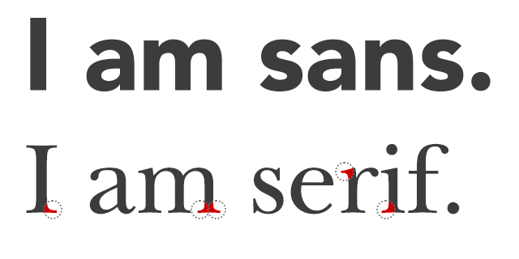
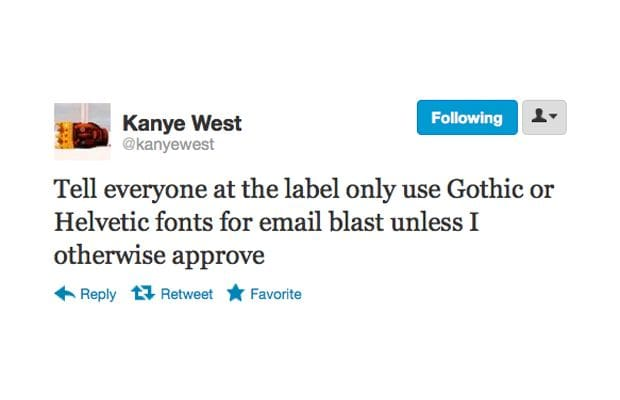
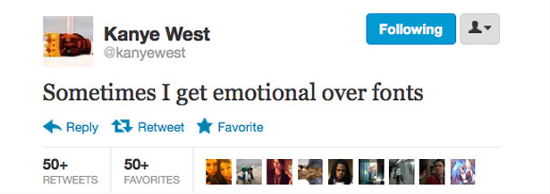
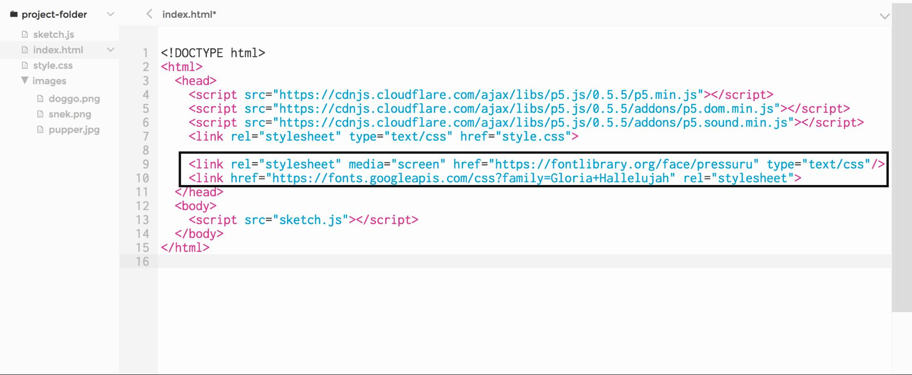

Overview
In this learning activity, students draw text with different fonts (both system fonts and custom ones), manipulating their placement, size, and color.

Overview
In this learning activity, students draw text with different fonts (both system fonts and custom ones), manipulating their placement, size, and color.
Suggested Duration
45 - 90 minutes
Objectives
Students will be able to:
Vocabulary
| Font | A font is a set of printable or displayable text character s in a specific style and size. |
|---|---|
| Serifs | Serifs are semi-structural details or small decorative flourishes on the ends of some of the strokes that make up letters and symbols. An example would be the Times New Roman font. |
| Sans Serif | Sans serif does not have these details or flourishes. An example would be the Arial font. |
Resources
Draw With Fonts
To draw text in p5, we use the text function. Its first parameter sets the text to display, the second and third its position. Size is set calling fontSize.
The font can be changed by calling textFont. Some fonts come installed in most computers. They are called 'system fonts'. Common examples are "Arial", "Courier," "Courier New," "Georgia," "Helvetica," "Palatino," "Times New Roman," "Trebuchet MS," and "Verdana".
Custom fonts might be installed on our computer, but not on our user's. To ensure that our text will be displayed correctly when using less common fonts, we can follow one of the following approaches.
Not All Fonts Are Created Equal
Although there are all kinds of crazy fonts out there - fonts that look like handwriting, fonts that look like big boxy letters - the readable fonts you would typically type large chunks of text in fall into two main categories:

Outside of the decorative serif (the little line on the end of letters!), there are so many other issues that typographers and designers are concerned with when they add text to projects. These are not issues we will be focusing on in this lesson, but it is worth noting that things like the space between characters (kerning), the maximum height of characters, and even the angle of certain parts of the letters are all things professional designers think about.
General rules for web typography follow, and can be explored further here:
It's also worth knowing that some fonts come with a lot of baggage from the design community - fonts like Papyrus and Comic Sans give people a lot of strong feelings! Tread carefully if you choose to use them.


Use a Web Font
Fonts on the web are downloaded from a server upon request. Many options are available, often for free, in websites like Google Fonts and Open Font library. Once we have chosen a font, we can copy an 'embed' link from the website. It looks like this: <link href="http://fonts.googleapis.com/css?family=Source+Code+Pro" rel="stylesheet" type="text/css">


We then paste the embed link into the head section of our sketches' index.html file:

Now that the web font is linked to our sketch, we can use it with textFont as before:
Use a Downloaded Font
Maybe the sites that host web fonts don't have what you're looking for - that's okay! You can download font files directly to your computer and upload them into your program so they can be used and seen everywhere.
The steps to include a downloaded font in our sketch are similar to those we took to include an image in the previous learning activity. We copy the file into our sketch folder (p5 supports the TTF and OTF file formats), load it into a variable preload using loadFont, and then set our text to it using textFont
Set the Text Stroke And Fill
p5's color-setting functions, fill and stroke, also affect text, as the text has both a line around the outside and a fill on the inside (even if sometimes it's very narrow):
Draw Text within a box
We can constrain a text to be drawn within a box by adding x, y, width, and height parameters to the call to text:
Exercise #1: Build Your Own Font Library
Go on Google Font or any other font resources and find the following, ensuring that they all go well together:
Load each into your program and display a sample sentence in the font so you have this for reference!
You can use https://fontpair.co/ as a reference to figure out which font pairings work well depending on the message or text you're trying to display.
Extension
As an extension, create an array of sentences the computer will randomly choose from to display. If you need more, try to make the computer pair a random serif and display, etc for two random sample sentences each time the program is run.